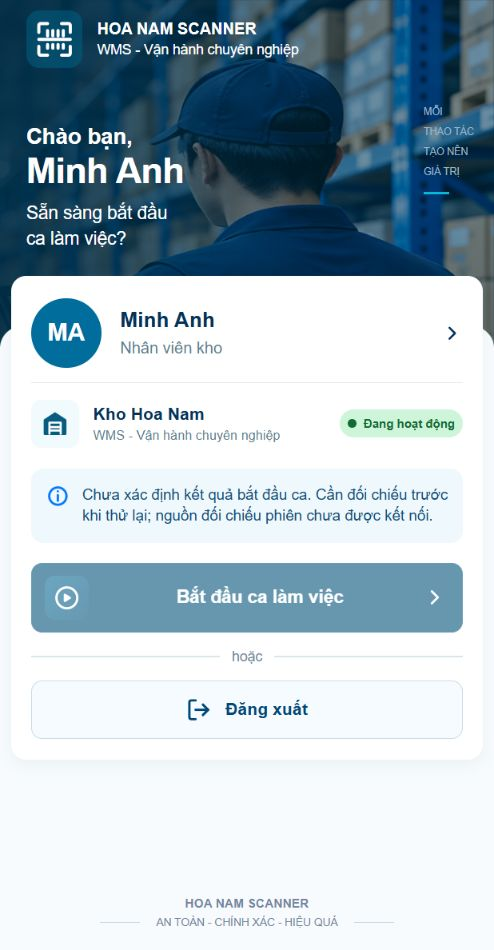
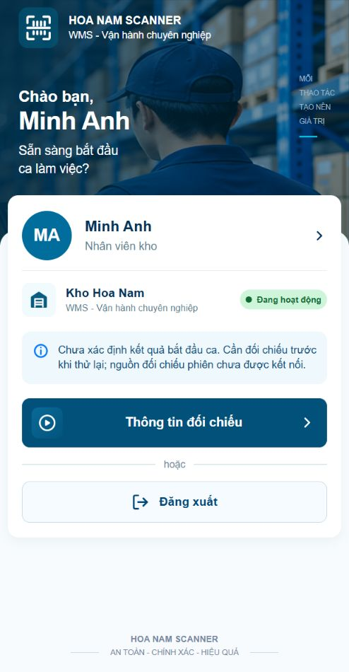
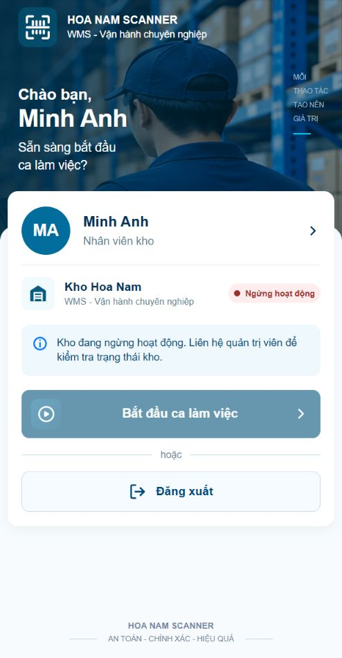
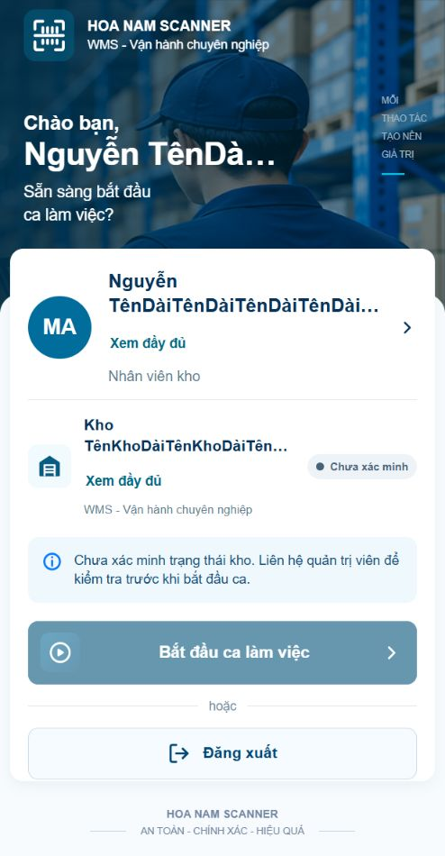

P01 r07 · Sửa lỗi UI/UX
Actual prototype, không phải chứng nhận pixel-perfect hoặc production. Phạm vi và bằng chứng kiểm thử.
Trạng thái UNKNOWN
Trước: không có đường mở lại hướng dẫn
Sau: Thông tin đối chiếu; không gửi lại start
Đồng bộ nguồn phiên
Kho dừng: badge và guard thống nhất
Nội dung dài: có đường đọc đầy đủ
Dialog dài sau sửa
Đăng nhập giữ nguyên nhận diện